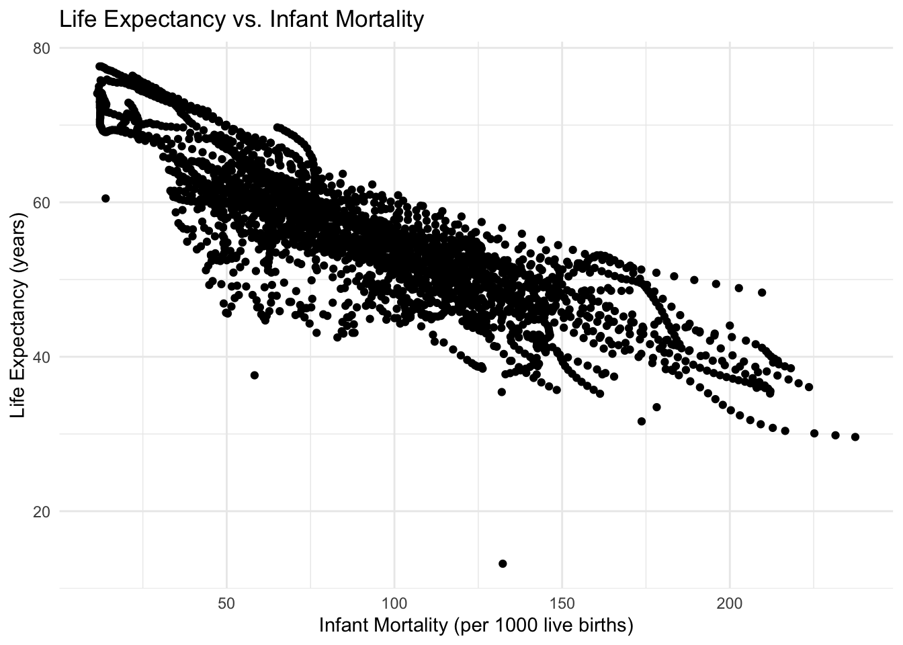

library(dslabs)
help(greenhouse_gases)R Coding Exercise
Placeholder file for the future R coding exercise.
To load the dslabs package
library(dslabs)
Look at help file for gapminder data
help(gapminder)
Get an overview of the data structure
str(gapminder)
Generate a summary of the data
summary(gapminder)
Determine the type of object gapminder is
class(gapminder)
Subset the dataset to only include African countries
africadata <- gapminder[gapminder$continent == “Africa”, ]
Check the structure of the new africadata object
str(africadata)
Check a summary of the new africadata object
summary(africadata)
Create an object containing only the ‘infant_mortality’ variable
africadata_infant <- africadata[, “infant_mortality”]
Check the structure of the new object
str(africadata_infant)
Check a summary of the new infant mortality object
summary(africadata_infant)
Create an object containing only the ‘life_expectancy’ variable
africadata_life <- africadata[, “life_expectancy”]
Check the structure of the new life ex. object
str(africadata_life)
Check a summary of the new life ex. object
summary(africadata_life)
Load the plotting tools library through ggplot package
library(ggplot2)
Plot life expectancy as a function of infant mortality + theme tool is something found in use of AI for my plots
ggplot(africadata, aes(x = infant_mortality, y = life_expectancy)) + geom_point() +
Plot above data as points
labs( title = “Life Expectancy vs. Infant Mortality”, x = “Infant Mortality (per 1000 live births)”, y = “Life Expectancy (years)” ) + theme_minimal()
Plot life expectancy as a function of population size with log scale on x-axis, using the + theme tool is something found in use of AI for my plots
ggplot(africadata, aes(x = population, y = life_expectancy)) + geom_point() +
# Plot above data as points scale_x_log10() +
# Set x-axis to log scale labs( title = “Life Expectancy vs. Population Size”, x = “Population Size (log scale)”, y = “Life Expectancy (years)” ) + theme_minimal()
The data streaks are likely due to the large number of data plots that are close in relative number, especially on a log scale. This makes the data appear to be in streaks rather than in individual points.
Identify rows where infant_mortality is missing (NA)
missing_infant_mortality <- africadata[is.na(africadata$infant_mortality), ]
Extract the unique years with missing infant mortality data
missing_years <- unique(missing_infant_mortality$year)
Print the result
missing_years
Subset the africadata object to only include data for the year 2000
africadata_2000 <- africadata[africadata$year == 2000, ]
Check the structure of the new object
str(africadata_2000)
Check a summary of the new object
summary(africadata_2000)
Load necessary libraries again
library(ggplot2)
Make Plot 1: Life Expectancy vs. Infant Mortality for the year 2000
ggplot(africadata_2000, aes(x = infant_mortality, y = life_expectancy)) + geom_point() +
Plot data as points
labs( title = “Life Expectancy vs. Infant Mortality (Year 2000)”, x = “Infant Mortality (per 1000 live births)”, y = “Life Expectancy (years)” ) + theme_minimal()
Plot 2: Life Expectancy vs. Population Size (Log scale) for the year 2000
ggplot(africadata_2000, aes(x = population, y = life_expectancy)) + geom_point() +
Plot data as points
scale_x_log10() +
Set x-axis to log scale
labs( title = “Life Expectancy vs. Population Size (Year 2000)”, x = “Population Size (log scale)”, y = “Life Expectancy (years)” ) + theme_minimal()
Fit a simple linear model with life expectancy as the outcome and infant mortality as the predictor
fit1 <- lm(life_expectancy ~ infant_mortality, data = africadata_2000)
Apply the summary to fit1 to display the results
summary(fit1)
Fit a linear model with life expectancy as the outcome and population size as the predictor
fit2 <- lm(life_expectancy ~ population, data = africadata_2000)
Apply the summary to fit2 to display the results
summary(fit2)
Based on the data’s generated significantly small p scores, there is highly statistically significant relationships between both life expectancy and infant mortality as well as life expectancy and population size. This makes intuitive sense based on what is known about demographic transition and development, which is under the purview of the gapminder data on developing African countries.
Alexis Gonzalez contributed to the following section!
#ooking at help file for greenhouse_gases data
checking out the data set
str(greenhouse_gases)'data.frame': 300 obs. of 3 variables:
$ year : num 20 40 60 80 100 120 140 160 180 200 ...
$ gas : chr "CO2" "CO2" "CO2" "CO2" ...
$ concentration: num 278 278 277 277 278 ...summary(greenhouse_gases) year gas concentration
Min. : 20 Length:300 Min. : 260.0
1st Qu.: 515 Class :character 1st Qu.: 269.7
Median :1010 Mode :character Median : 279.7
Mean :1010 Mean : 416.2
3rd Qu.:1505 3rd Qu.: 641.0
Max. :2000 Max. :1703.4 Checking what type of object greenhouse_gases is
class(greenhouse_gases)[1] "data.frame"There aren’t many variable in this but I want to see just years
library(tidyverse)── Attaching core tidyverse packages ──────────────────────── tidyverse 2.0.0 ──
✔ dplyr 1.1.4 ✔ readr 2.1.5
✔ forcats 1.0.0 ✔ stringr 1.5.1
✔ ggplot2 3.5.1 ✔ tibble 3.2.1
✔ lubridate 1.9.4 ✔ tidyr 1.3.1
✔ purrr 1.0.2
── Conflicts ────────────────────────────────────────── tidyverse_conflicts() ──
✖ dplyr::filter() masks stats::filter()
✖ dplyr::lag() masks stats::lag()
ℹ Use the conflicted package (<http://conflicted.r-lib.org/>) to force all conflicts to become errorsgrnhsyr <- greenhouse_gases %>%
select(year)
str(grnhsyr)'data.frame': 300 obs. of 1 variable:
$ year: num 20 40 60 80 100 120 140 160 180 200 ...summary(grnhsyr) year
Min. : 20
1st Qu.: 515
Median :1010
Mean :1010
3rd Qu.:1505
Max. :2000 library(ggplot2)now lets make a variable that summarizes the concentration of all gases each year so we can see gas concetration over years. Later we can look at each gas
#first we have to summarize total concentration by year
total_by_year <- greenhouse_gases %>%
dplyr::group_by(year) %>%
dplyr::summarize(total_concentration = sum(concentration))Now lets look for some trends in gas concentration over years
p1 <- ggplot(total_by_year, aes(x=year, y=total_concentration)) +
geom_line(size = 1, color = "lightblue")Warning: Using `size` aesthetic for lines was deprecated in ggplot2 3.4.0.
ℹ Please use `linewidth` instead. title = "Gas concentration over Years"
x= "years"
y= " Total concentration"
print(p1)We see that the concentration of greenhouse gases skyrocket in 20-21st century, lets see the concentration of gases from just that time period
#make a new variable for desired time frame
gasyears <- greenhouse_gases %>%
filter(year >= 1900 & year <= 2000) %>%
group_by(year) %>%
summarize(total_concentration = sum(concentration))
p2 <- ggplot(gasyears, aes(x=year, y=total_concentration)) +
geom_line(size = 1, color = "darkgreen")
title = "Gas concentration from 1900 to 2000"
x= "years"
y= " Total concentration"
print(p2)
To no surprise we see the highest amount of greenhouses gases in the year 2000 so finally lets see a break down of the gas concentration by gas
#first I'm going to filter the data to only include the year 2000
gas_2000 <- greenhouse_gases %>%
filter(year == 2000)# Now I'm going to make a bar graph
p3 <- ggplot(gas_2000, aes( x = gas, y = concentration, fill = gas))+
geom_bar(stat = "Identity") +
labs(
title = "Greenhouse Gases in 2000",
x = "Greenhouse gas",
y = "Concentration"
)
print(p3)Finally we will create a linear model to see the relationship between time in years and gas concentration
model <- lm(total_concentration ~ year, data=total_by_year)
summary(model)
Call:
lm(formula = total_concentration ~ year, data = total_by_year)
Residuals:
Min 1Q Median 3Q Max
-144.32 -69.15 -25.38 18.87 983.96
Coefficients:
Estimate Std. Error t value Pr(>|t|)
(Intercept) 1.092e+03 2.994e+01 36.482 < 2e-16 ***
year 1.547e-01 2.573e-02 6.012 3.15e-08 ***
---
Signif. codes: 0 '***' 0.001 '**' 0.01 '*' 0.05 '.' 0.1 ' ' 1
Residual standard error: 148.6 on 98 degrees of freedom
Multiple R-squared: 0.2694, Adjusted R-squared: 0.262
F-statistic: 36.14 on 1 and 98 DF, p-value: 3.152e-08p4 <- ggplot(total_by_year, aes(x= year, y= total_concentration)) +
geom_point(size = 3, color = "aquamarine3" ) +
geom_smooth(method = "lm", se = TRUE, color = "black") +
labs(
title = "relationship between year and gas concentration"
)
print(p4)`geom_smooth()` using formula = 'y ~ x'From this analysis we see that year and gas concentration have a positive relationship, as the year increases total gas concentration increases. There is an exponential increase in gas concentration around the year 1900, peaking at 2000. In 2000 the most abundant greenhouse gas was CH4 or methane.